R. Kent Dybvig
Indiana University Computer Science Department
Bloomington, IN 47405
dyb@cs.indiana.edu
Copyright c 1992 R. Kent Dybvig
August 1992
摘要
本文描述 Scheme 的一个基于模式的卫生宏系统，并提供许多使用它的示例。使用此系统定义的宏自动是 卫生的 和 引用透明的。与早期的卫生宏系统不同，该系统不要求“低级”宏以不同于“高级”宏的风格编写。特别是，自动卫生、引用透明性和使用模式的能力可以扩展到所有宏定义，而且永远不需要显式地操作任何类型的语法环境。宏系统还为受控变量捕获提供卫生保护机制，允许宏引入隐式标识符绑定或引用。
本文描述一个卫生的Scheme宏系统，它类似于“算法语言方案的修正4 报告”[2] 附录中记录的宏系统，但有几个重要的区别。最重要的是：在这个系统中，“高级”和“低级”宏之间没有实质区别。虽然有些宏不会利用更原始的操作符，但对于那些利用这些操作符的宏来说，不会损失自动卫生、引用透明性或易用性。特别是，以前只对高级宏可用的模式匹配功能，现在可以在任何上下文中使用。根本不需要完全重写一个最初用高级风格编写的宏，因为它现在需要访问一些更原始的特性。此外，永远不需要显式地操作任何类型的语法环境。
宏系统由一组定义形式、一组用于分解和组合语法的形式以及一组用于操作和比较标识符的原语组成。与常用的 Scheme 数据表示不同，该系统基于抽象对象的表达式。宏转换器将语法对象作为输入，返回(扩展)语法对象作为输出。每个语法对象中嵌入足够的信息来确定语法对象中包含的所有标识符的绑定，以及语法形式本身的内部表示。其他依赖于实现的信息可能包含在语法对象中；例如，表达式在原始源代码中的位置可能用于调试目的。
本文的下一节将试图明确定义宏系统所使用的术语、语法形式和原语操作符(第2节)。下面的部分通过一系列示例演示：使用这个系统(第3节)编写从简单到复杂的宏是多么容易。读者可能喜欢在第一次阅读时跳过第2节，在读完第3节中的一些例子后再回到第2节。虽然这不是一个完整的实现指南，但它提供一个操作理论来帮助宏编写者理解扩展过程(第4节)。
为了充分理解本文中的示例，有必要对 Scheme 有很好的理解，学习或使用 extend-syntax [5, 3] 或修订4 报告中记录的高级系统是有帮助的，但不是必须的。
本文旨在指导潜在的宏观系统用户如何使用该系统；没有试图与其他系统进行论证或比较。[4]给出对这个宏系统及其实现的更正式的处理，以及关于这个宏系统和其他宏系统的背景信息。
宏系统的完整实现是可用的，并且可以在任何 Scheme 系统中运行，只要提供一些与实现相关的“钩子”。它可以通过 “匿名 ftp” 从 pub/scheme/syntax-case 目录中的 moose.cs.indiana.edu 获取。
定义新的宏是为了扩展程序或子程序中可用的语法形式集。所有扩展语法形式，也称为“宏调用”，采用以下形式：
其中 keyword 是命名宏的标识符。 subform 的语法由宏决定，并且在不同宏之间有很大的不同。建立新的关键字绑定和编写宏的机制将在本节的其余部分中描述。下一节将给出详细的示例，演示本节中描述的每个特性的使用。
使用这些工具定义的宏是自动 卫生的 [6]。如果宏转换器为标识符(变量或关键字)插入绑定，新的绑定将不会捕获其他地方引入的其他标识符(甚至同名)。使用这些工具定义的宏也是 参照透明的 [1]。如果一个宏转换器插入一个对标识符的自由引用，则该引用指向在指定转换器的地方可见的绑定，而不管围绕宏使用的任何本地绑定。为了维护这两个属性，将对宏引入的绑定标识符进行重命名(至少在实际中是这样)，以避免潜在的冲突。
尽管这几乎总是期望的行为，但有时希望在宏的输出中插入标识符，该标识符的行为就好像它们在原始表达式中存在一样。也就是说，插入的标识符将被现有绑定绑定（捕获），或用于插入绑定来绑定(捕获)现有引用。在本节的最后描述一种以受控的、卫生保护的方式实现此目的的机制。
通过将标识符(或 关键字 )与转换过程(或 转换器 )相关联来定义新的语法形式。在顶层，语法定义采用以下形式：
transformer-expression 必须是计算结果为转换器的表达式。当扩展器遇到表单的表达式 (keyword . subform )时，表达式被传递给关联的转换器进行处理。可以使用一种词法绑定形式来限制语法定义的范围：
在这两种形式中， keyword 表示 body 中的新语法；在 letrec-syntax 的情况下，绑定范围还包括每个 transformer-expression 。
词法宏关键字绑定、普通词法变量绑定和模式变量绑定(下面介绍)可以相互遮挡，任何词法绑定都会遮挡同一个标识符的顶级绑定。在 lambda 主体(或其他类似主体)前面的定义中出现的任何 define-syntax 形式都被视为 letrec-syntax 绑定。
宏转换器是一个参数的程序。宏转换器的参数是一个 语法对象，它除了包含表达式的结构外，还包含关于表达式的上下文信息。这个上下文信息使宏系统能够确定表达式中包含的每个标识符所引用的绑定。这一信息需要保持卫生和引用透明度。同样的信息还允许宏转换器根据标识符作为自由标识符、绑定标识符或数据的预期用途来比较标识符。语法对象可能包含宏编写者不直接感兴趣的其他语法信息。例如，语法对象可以包含源代码注释，这些注释允许求值器将最终的目标代码与生成它的源代码关联起来。
转换器的输出本身可能是一个宏调用或包含宏调用，在这种情况下将执行进一步展开，直到没有宏调用剩余。
变形金刚使用 syntax-case 分解输入，并使用 syntax 重建输出。 syntax-case 表达式采用以下形式：
每个 clause 有以下两种形式：
syntax-case 首先计算 input-expression ，然后尝试将结果值与第一个 clause 中的模式匹配。这个值通常是一个语法对象，但它可以是任何Scheme列表结构。如果值与模式匹配，并且没有出现 fender ，则计算 output-expression ，并将其值作为 syntax-case 表达式的值返回。如果值与模式不匹配，则将该值与下一个子句进行比较，依此类推。如果该值不匹配任何模式，则会发出错误信号。
模式由列表结构、标识符和常量组成。模式中的标识符可以是 文字 、 模式变量或特殊标识符 . . . ，表示省略号。除 . . . 以外的任何标识符，如果它出现在 syntax-case 表达式中的字面量列表 (literal . . . ) 中，那么这些标识符是字面量；否则它就是一个模式变量。字面量可以作为辅助关键字，比如 case 和 cond 表达式中的 else 。模式中的List结构指定输入所需的基本结构，模式变量指定任意子结构，而字面量和常量必须精确匹配原子块。省略号指定它们所遵循的子模式的重复出现。
输入形式 F 匹配模式 P ，当且仅当：
P 是一个模式变量；
P 是一个字面标识符，而 F 是具有相同绑定的标识符；
P 是一个模式列表 (P1 . . . Pn ) ， F 是一个 n 种形式的列表，它们分别匹配 P1 到 Pn ；
P 是一个反常模式列表 (P1 P2 . . . Pn . Pn+1 ) ， F 是一个包含 n 种或 n 种以上形式的列表或反常列表，它们分别匹配 P1 到 Pn ，并且它们的第 n 个 cdr 匹配 Pn+1 ；
P 的形式是 (P1 . . . Pn Pn+1 ellipsis ) ，其中 ellipsis 是标识符 . . . ， F 是一个至少包含 n 个元素的正确列表，前 n 个元素分别匹配 P1 到 Pn ， F 的每个剩余元素都匹配 Pn+1 ；
P 是一个模式数据，在 equal? 过程的意义上， F 等于 P 。
如果存在可选的 fender ，则它是对子句接受的附加约束。如果 input-expression 的值与给定子句的模式匹配，则计算相应的 fender 。如果 fender 计算值为真值，子句将被接受，否则子句将被拒绝，就好像输入无法匹配模式一样。Fenders 在逻辑上是匹配过程的一部分，也就是说，它们在表达式的基本结构之外指定了额外的匹配约束。
子句的 pattern 中包含的模式变量被绑定到子句的 fender (如果存在)和 output-expression 中的输入值的相应部分。虽然由 syntax-case 创建的模式变量绑定会遮蔽(也会被遮蔽)词法和宏关键字绑定，但模式变量只能在 syntax 表达式中被引用。Scheme syntax 表达式的形式如下:
syntax 形式返回 Scheme 对象的方式与 quote 或 quasiquote 非常相似，但有两个重要的区别：出现在 template 中的模式变量的值被插入到 template 中，包含在 template 中的上下文语法信息被保留。 template 中的所有列表结构在输出中仍然是普通的列表结构，所有其他项(包括标识符)都被插入而不作进一步解释。与插入的模式变量值和模板中的任何非列表项相关联的上下文信息保留在输出中。
在模板中，后跟省略号的子模板展开为零次或多次出现的子模板。子模板必须包含至少一个模式变量，该模式变量在子模式中，然后在输入中加上省略号。(否则，扩展器无法确定该子表单应在输出中重复多少次。)这以一种自然的方式概括为嵌套省略号。这个规则有一个例外：特殊模板 ( . . . . . . )扩展到 . . . 。这被宏定义的宏用来在定义宏中引入省略号。
出现在 syntax 模板中的模式变量将被它在建立模式变量绑定的 syntax-case 表达式中匹配的子表单所取代。出现在子模式中，后面跟着一个或多个省略号的模式变量可能只出现在 syntax 模板中，后面跟着(至少)同样多省略号的子模板中，在这种情况下，它们在输出中被它们在输入中匹配的所有子表单所替换。
它是一个转换器返回“原始”符号的错误；转换器返回的所有名称必须是由 syntax 表达式引入的标识符。换句话说，如果一个转换器返回一个符号，那么该行为是未定义的。
系统提供三个谓词来识别和比较标识符(术语标识符在整个过程中被用作“表示标识符的语法对象”的简写)： identifier? 、 free-identifier=? 和 bound-identifier=? 。当且仅当其参数是标识符时，谓词 identifier? 返回true。
谓词 free-identifier=? 和 bound-identifier=? 用于根据它们在宏输出中作为自由或绑定标识符的 intended 使用来确定两个标识符是否相等。当需要确定为一个标识符引入的绑定是否会将引用绑定到另一个标识符时，就使用谓词 bound-identifier=? 。只有当两个标识符具有相同的名称，并且都在原始程序中存在，或者都由同一个宏应用程序引入时，才会使用 bound-identifier=? 。谓词 bound-identifier=? 可用于检测绑定构造中的重复变量名，或用于需要检测绑定变量实例的绑定构造的其他预处理。当需要确定作为自由引用插入的两个标识符是否都指向同一个绑定时，就使用谓词 free-identifier=? 。出现在 syntax-case 模式中的文字标识符(例如 cond 中的 else )使用 free-identifier=? 匹配。
如果两个标识符不是 bound-identifier=? ，则它们可以是 free-identifier=? ，但反之则永远不成立。通常，当两个标识符在不同的宏展开步骤中被引入，但如果作为自由引用插入，两个标识符都将引用相同的绑定，它们是 free-identifier=? ，而不是 bound-identifier=? 。
在极少数情况下，需要比较将作为符号(引用)数据插入宏输出中的两个标识符。没有提供用于直接比较将用作符号数据的两个标识符的谓词;但是，用 syntax-object >datum 来定义一个很简单，它从任何语法对象中提取“原始”数据：
在宏的输出中不需要为插入生成唯一名称，这在非卫生系统中通常是必要的，因为插入的绑定实际上是根据需要重新命名的。但是，有时可以方便地创建一个临时名称列表。过程 generate-temporaries 用于此目的。这个过程接受一个列表作为输入，并返回一个新标识符列表，每个标识符对应输入列表中的每个元素。输入列表的实际元素将被忽略。通常，传递给generate-temporary的列表是从输入到宏的一个子表单列表，其中子表单的数量决定所需的临时表单的数量。(参见下一节中的 letrec 示例。)
有时，定义为标识符引入可见绑定的宏是有用的，这些标识符在宏调用中没有显式提供。例如，我们可能希望定义一个 loop 宏，将隐式变量 exit 绑定到循环体中的转义过程。这可以使用过程 implicit-identifier 来完成。过程 implicit-identifier ，参数是 template identifier 和 symbol ，创建一个由符号命名的标识符，它的行为就好像它是作为模板标识符同时被引入的。模板标识符通常是宏关键字本身，从输入中提取，符号是要构造的标识符的符号名。第3节给出几个使用 implicit-identifier 的例子。
当没有选择任何子句时， syntax-case 会自动报告许多语法错误。然而，有时产生的错误消息会引起误解(例如，如果 syntax-case 只应用于输入的一部分)，或者提供的信息少于预期。过程 syntax-error 可用于显式地发出错误信号。这个过程接受一个或多个参数：第一个参数是一个语法对象(为了可读性，它总是剥离所有语法信息)，其余参数是描述错误的字符串。如果不提供字符串参数，则会随剥离的第一个参数一起打印一个默认消息，例如“invalid syntax”。
本节包含一系列带注释的示例宏定义，从几个简单宏开始，逐步过渡到更复杂的宏。前面的小节中描述的每一种语法形式和过程都得到演示，而且最多演示一次。许多示例定义标准的修正4 报告派生的语法形式，假定读者已经熟悉它们的语法和语义。
在代码中，语法关键字以黑体显示，例如 lambda ；词法变量、顶层变量和模式变量以斜体显示，例如 x ；注释和常量以罗马字体出现，例如 “okay” 。
第一个例子是一个非常简单的宏，用于标准语法形式 and2 的两个子表达式变体 and 。
define-syntax 表达式为 and2 关键字建立到指定转换器的绑定。作为转换器输入的语法对象被传递给 syntax-case ；最终，语法对象几乎不能做任何事情，除非通过 syntax-case 。 syntax-case 表达式只包含一个子句。输入模式 (_ x y ) ，指定除了宏关键字外，该表单还需要两个子表达式，并且模式变量 x 和 y 被绑定到输入的相应部分。输出表达式只是返回一个根据这些模式变量定义的新表达式。
即使在这个简单的示例中，也有三件事值得注意。首先，由宏生成的输出直接或间接地通过 syntax 形式生成。 syntax 表单有两个用途：它将模式变量扩展到输入的相应子表单中，并在输出表单中保留关于词法变量绑定的信息和其他上下文信息。在本例中，该上下文信息有助于确定输出中的 if 指向 if 的顶层绑定，而不是指向 if 的其他绑定。另一方面，如果定义这个宏的地方有一个可见的 if 的本地绑定，那么上下文信息将确保 if 指向那个本地绑定，而不是顶层绑定(或任何其他绑定)。
其次，在输入模式中出现的模式变量 x 遮蔽了由封闭lambda表达式限定的词法变量 x 。如果 x 在输出表达式中被引用，但在 syntax 形式之外，则会出现错误。通过向外追踪找到绑定标识符的最近的封闭绑定形式，总是可以找到标识符的绑定；如果不存在这种形式，标识符将引用顶级绑定。本地绑定表单包括 lambda 、 let 、 letrec 、 do 、 let-syntax 、 letrec-syntax 、内部 define 和 define-syntax 、 syntax-case ，以及扩展为这些表单之一的任何宏。
第三，本例中使用模式变量下划线 (_) ，并且在大多数示例中，宏关键字将出现在输入表达式中。这只是一个惯例；这里可以使用任何模式变量，包括宏本身的名称。这种约定有助于提醒宏编写者和任何读取代码的人，关键字位置永远不会包含预期的关键字，不需要匹配。当使用 let-syntax 定义本地宏时，该约定还可以帮助避免混淆。(请参阅本节后面关于本地 if 示例的讨论。)
下面两个例子定义了在许多 Scheme 实现中都可以找到的 when 和 unless 表单，演示使用省略号来指定多个子表单：
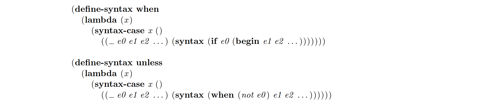在这两种情况下，展开都清楚地显示 when 和 unless 的目的： when 计算测试表达式 e0 ，如果计算结果为true，则依次返回计算其余子表单的结果。在 unless 形式中，测试的意义相反，它也表明一个宏的输出可以用另一个宏来定义。两者都要求在测试表达式之后至少有一个子表达式 e1 ，以及零个或多个附加形式 e2 . . . .
when 表单展开为对宏关键字 if 和 begin 的引用，而 unless 表单展开为对宏关键字 when 和变量 not 的引用。在非卫生系统中， when 或 unless 表达式上下文中任何这些标识符的本地绑定都可能改变构造的语义。但是，根据上面的定义，这不是问题，所以下面的表达式都按预期打印“win”:
这些宏都可以很容易地定义为使用 let-syntax 或 letrec-syntax 的本地宏。例如：
在这种情况下，使用 let-syntax 或 letrec-syntax 中的哪一个并不重要，因为宏关键字 when 并不出现在转换器表达式中。在以下递归定义的宏 and 泛化为零或更多子窗体中，选择是很重要的:
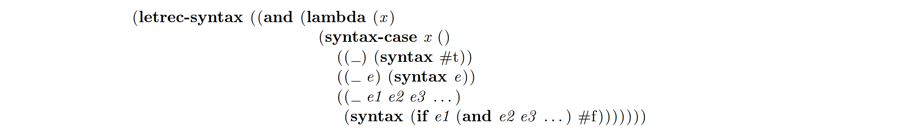第二个子句定义递归的基本情况(一个子表达式)，第三个子句定义递归的情况(两个或多个子表达式)。第一个子句指定没有子表达式时会发生什么。在 (and x y z ) 的扩展期间，我们希望有以下中间和最终形式：
由于 and 宏是递归的，它必须使用 define-syntax 或 letrec-syntax 来定义，而不是 let-syntax 。使用 let-syntax ，第三个子句输出中的 and 将引用 and 的顶级定义。(当然，如果您在 Scheme 系统中尝试这样做，它可能会工作，因为它在顶层被定义做完全相同的事情。尝试使用 let-syntax ，但使用不同的名称，比如 myand ，看看会发生什么。)
到目前为止定义的宏还没有引入任何新绑定。以下是 or 的定义：
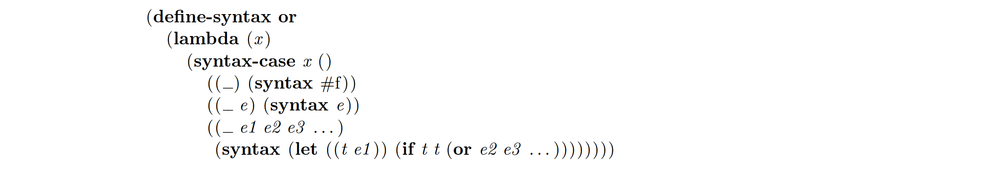or 表达式必须返回第一个计算为真(非假)值的子表达式的值，如果没有子表达式计算为真(或没有子表达式)，则返回#f。如果有多个子表达式，它必须通过将第一个子表达式放在 if 表达式的测试部分来测试它的值，并在第一个子表达式的值为真值时返回它的值。为了避免对表达式求两次值，引入临时变量 t 。因为系统自动维护卫生，所以这个绑定只对宏引入的代码可见，而对宏输入中包含的代码不可见。因此，下面的值正确地为“ok”，尽管没有自动卫生，它的值将为#f，因为在第二个子表达式中对 t 的引用将被引入的 t 绑定捕获。
将绑定变量视为自动重命名以避免冲突是很有用的，这实际上是实现可能的工作方式。因此，扩展器的最终输出可能如下所示：
其中 g0001 和 g0002 是生成的名称。(出于调试目的，实际输出可能还包括原始名称，或者这些名称可能记录在提供给编译器或系统调试器的单独表中。)关于扩展过程的更多信息和示例，请参见第4节。
被引入的绑定绑定的标识符不一定是宏插入的新标识符，而是从宏的输入中提取的标识符。例如，如果系统没有提供(未命名) let ，则可以简单定义为:
(这是一系列 let 定义中的第一个，因此使用标。) 这个示例还演示模式可以包含多个省略号，省略号前面的子模式可以是包含一个或多个模式变量的结构化模式。它还表明，这种模式的各个部分可以在输出中拆分，就像 i 和 v 一样，它们一起出现在输入中，单独出现在输出中。
下面给出包含命名 let 的 let 的定义：
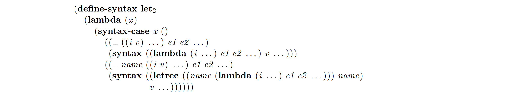第一个子句与上面的版本相同；第二个子句用 letrec 定义命名的 let 形式。这两个从句的顺序很重要。命名 let 不能匹配第一个子句，因为 ((i v ) . . . ) 不能匹配标识符。但是，如果子句颠倒过来，一些未命名的 let 表达式将匹配已命名的 let 子句，因为模式变量名可以匹配任何内容。
为了避免这个问题，我们可以引入一个挡泥板来“挡开”不需要的匹配：
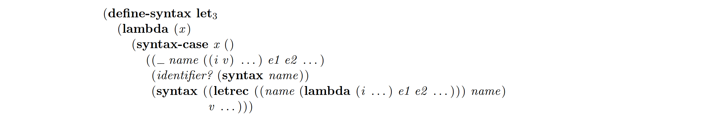
这里的挡泥板使用 identifier? 谓词以确保 name 是一个标识符。即使在挡泥板中，包围在 name 周围的 syntax 也是必要的，因为它是任何模式变量被引用的地方，并且任意的 syntax 形式可以在挡泥板中使用，就像它们可以在输出表达式中一样。
当输入正确时，上面的定义会产生正确的输出，并且它们会自动检查(通过 syntax-case) 输入中的基本结构错误。但是，它们不能确保绑定标识符确实是标识符。以下版本使用一个从挡泥板内部调用的本地帮助函数来执行此检查：
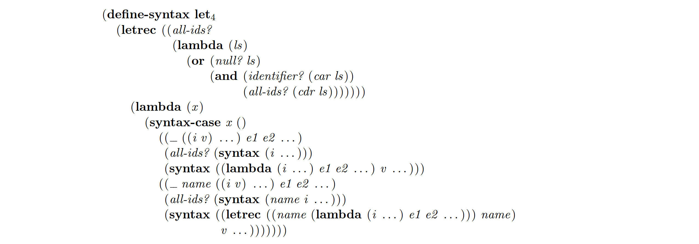这些挡板成功地拒绝在需要的地方没有标识符的输入表达式，但是报告的结果错误消息不会说明为什么拒绝输入。我们可以通过将测试移到输出表达式中并直接调用 syntax-error 来细化宏：
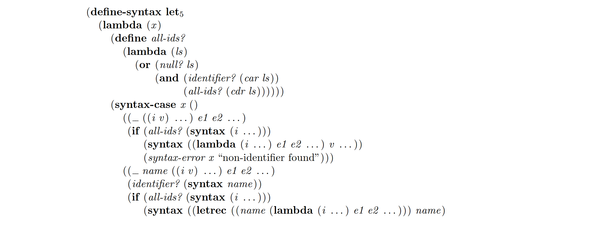确保 name 是一个标识符的检查留在最后一个子句中作为挡墙，因为该测试的失败可能是由于一个更通用的语法错误，例如：
现在假设我们收到一个包含重复绑定标识符的表单：
下面的版本也会检查这个条件：
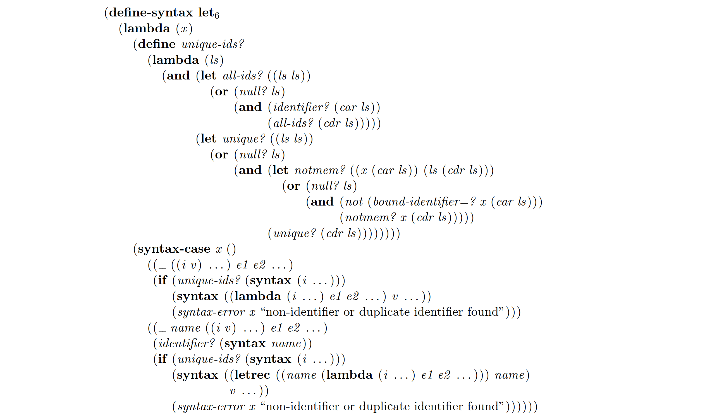使用 bound-identifier=? 允许 let 只拒绝那些会导致冲突的表单。如果定义使用 free-identifier=? ，下面的正确程序将被拒绝：
虽然宏调用 (f b) 显然扩展为 (let ((b 1) (b 2)) (+ b b)) ，但这个程序实际上是正确的，因为引入的标识符b被重命名以避免任何此类冲突。但是，由于 b 的两次出现，如果保留为自由引用，将指向 b 的相同(顶级)绑定， free-identifier=? 将不会区分它们。由于本例中的预期用途是作为绑定变量，因此使用了谓词 bound-identifier=? 。
这个 let 定义序列以下面的 let 版本结束，该版本允许值表达式为“隐式的begin”表达式:
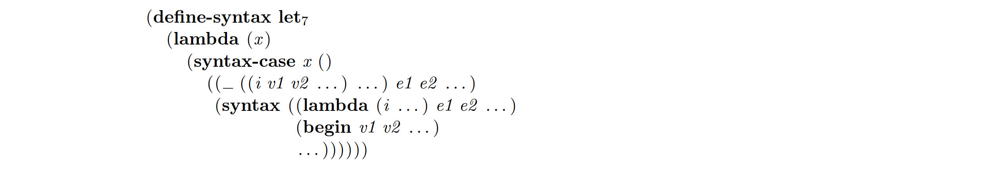虽然 let7 不是一个特别有用的构造，因为 lambda 参数(和 let 值表达式)的求值顺序是未指定的，但这个例子确实说明嵌套省略的使用。
上面的一些 let 示例使用由本地绑定标识符命名的辅助过程，几乎所有转换器都引用它们的参数。这些标识符绑定必须在展开时可供参考，这样才能工作。某些标识符的绑定是在展开时建立的，而其他标识符直到运行时才建立。运行时标识符不能在转换器中使用( syntax表达式除外)，对扩展时标识符的引用不能出现在转换器的输出中。下面的表达式会产生一个“无效引用”错误：
这是一个错误，因为在展开时运行的转换器试图引用标识符x ，该标识符直到运行时才被绑定。下面的例子也会产生一个无效的引用错误：
这是因为转换器展开为对变量 y 的(运行时)引用，而变量 y 仅在展开时可用。
将具有扩展时绑定的标识符插入到转换器的输出中并不总是错误，因为将其用作符号数据或绑定标识符并不是错误。下面的示例与前面的示例类似，只是插入的标识符最终被用作符号数据:
它展开为 (quote y) 并计算为 y 。当然，只要输出最终展开为包含 y 的 quote 表达式， quote 就不需要在上面的示例中显式地出现。因此，通常在确定标识符的角色之前不会检测到这类错误，而这可能在转换器返回很久之后才会发生。
有时创建模式变量绑定以将中间输出保存在宏体内是有用的。为此，可以为模式变量定义一个局部绑定操作符，类似于为普通变量定义 let 。下面定义的 with-syntax 形式展开为一个带有单个子句的 syntax-case 表达式：
下面是 or 的定义，它在第三个子句中使用 with-syntax 来单独构建输出的一部分：
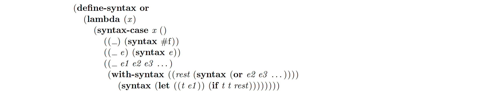下面的 do 的定义展示 with-syntax 更实际的用法：
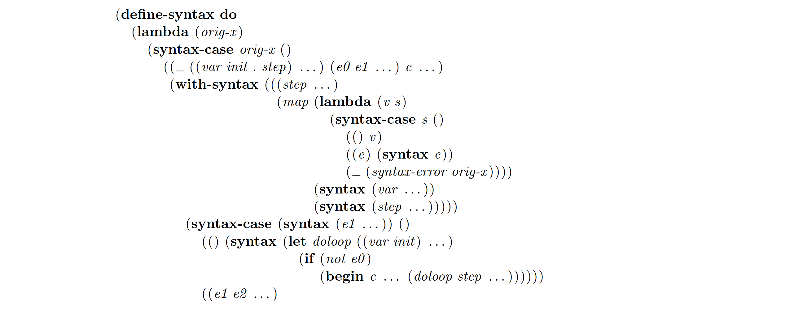这个定义不太优雅，但是 do 及其可选步骤和可选返回值表达式也是如此。
with-syntax 形式也可以用于将模式变量绑定到帮助函数的输出，如下面的 letrec 的定义所示：
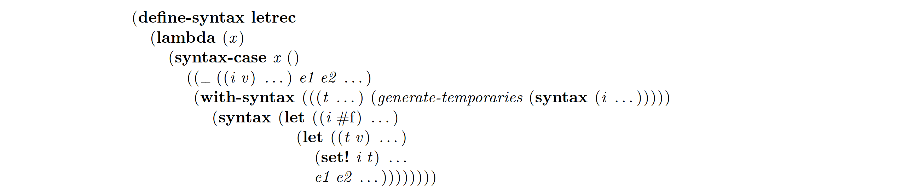cond 语法形式是最复杂的内置形式之一，但是为cond提供一个有效的宏并不是非常困难。在这里显示cond的一系列定义，每个定义具有不同的属性。
以下是本系列中第一个也是最简单的定义：
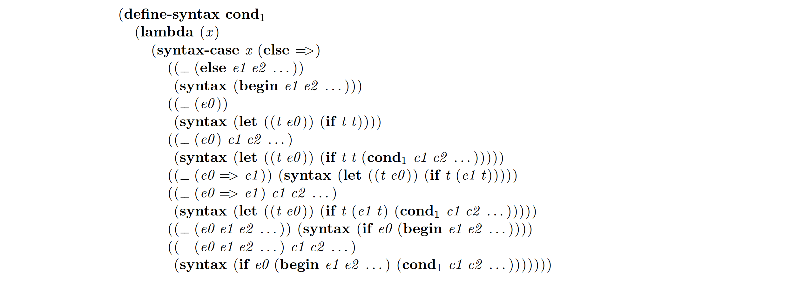注意 else 和 => 出现在字面值列表中。这告知 syntax-case 当这些标识符出现在模式中时，它们是字面量，而不是模式变量。这个定义中子句的顺序很重要，尽管可以进行一些重新排列。通常，更具体的模式必须出现在也可能与同一输入匹配的更一般的模式之前，因此， (_ (else e1 e2 . . . ) . . . ) 模式必须出现在 (_ (e0 e1 e2 ) . . . ) 模式之前，并且 检查 => 的模式必须出现在最后两个模式之前。
第二个子句的输出可以简化为 (syntax e0 ) ：
但是，我们选择使用更复杂的形式，以避免在 e0 计算为false时指定返回结果。相反，(与实现相关的)值由 else-less if 表达式确定。
上面第三个从句的输出可以用 or 来表示，尽管为了与前面的从句保持一致，我们选择不这样写。
cond 的下一个版本展示如何使用 free-identifier=? 来代替 syntax-case 字面量列表。它还提供一个使用挡泥板的好例子：
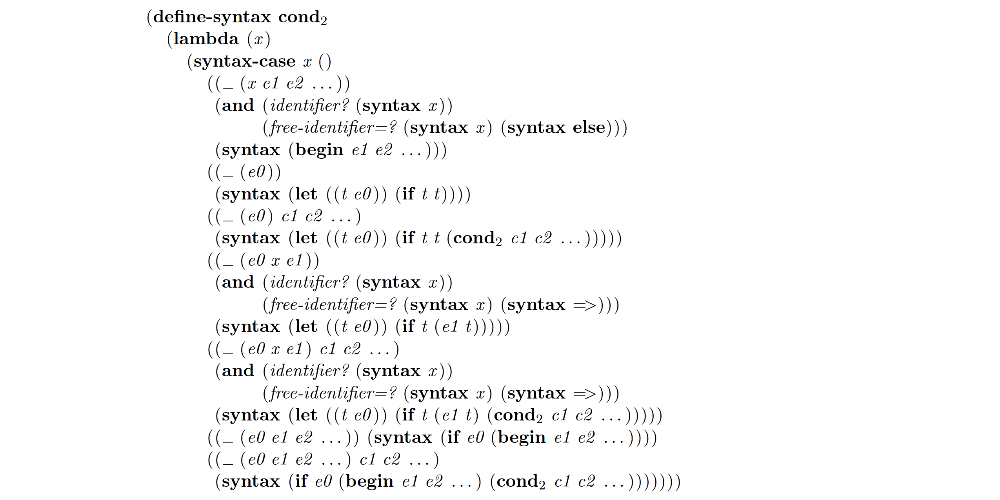上述两个版本的 cond 的输出都没有问题，但是由于它们的递归性质，当除第一个子句之外的其他子句出现畸形时，可能会得到一个稍微奇怪的错误消息。例如，当输入 (cond (x ) (y . z )) 时报告的语法错误可能是：
下面的cond示例比前两个更复杂，因为它在内部重现，因此它总是对原始输入表达式有一个句柄。它还包含一个显式错误子句，在该子句中直接调用 syntax-error 。它使用先前定义的 with-syntax 。
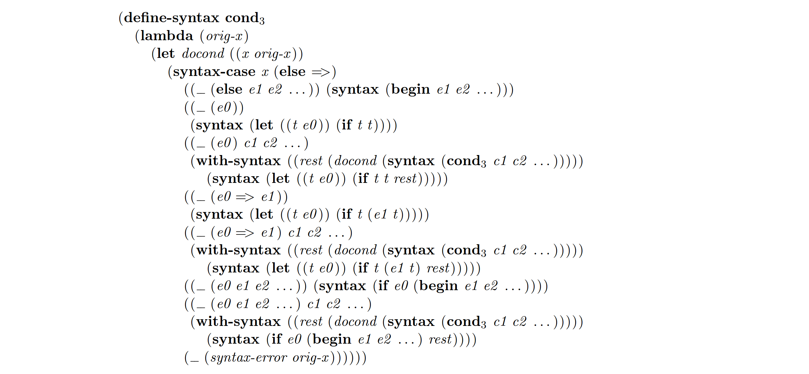到目前为止所展示的 cond 的版本都有两种适用于大多数子句类型的情况，一种适用于没有后续子句的情况，另一种适用于有后续子句的情况。这是必要的，因为递归的“基本”情况 (cond) 是无效的语法。接下来的三个示例通过在构造输出之前确定所生成的 if 表达式的“尾部”来通用各个子句； 该尾部为空或包含一个子表达式，因此仅当存在更多子句时，生成的 if 表达式才包含else部分。
第一组定义使用一个局部辅助函数 cond-if-tail 来构造 if 尾部：
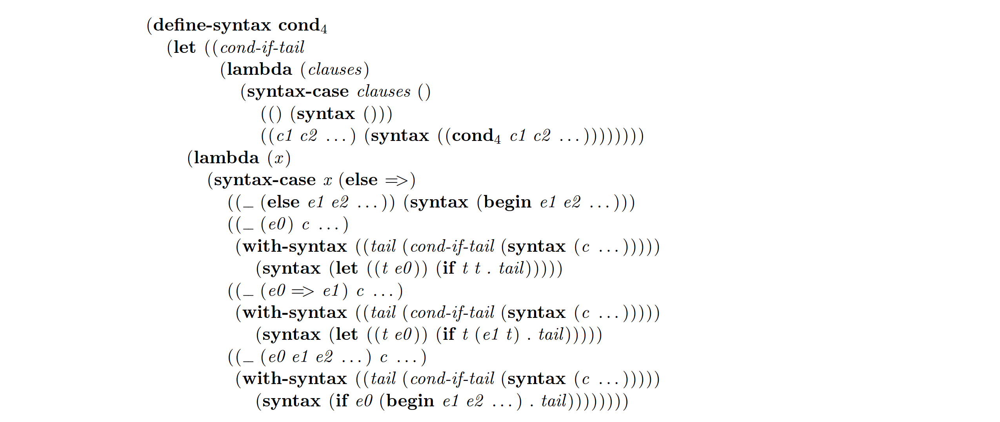下一个版本甚至在查看当前子句之前就构造尾部，并使用简化的模式只匹配当前子句。因为它确实使用简化的模式，所以它必须显式地生成一个错误，以明确错误是由畸形的 cond 表达式引起的。
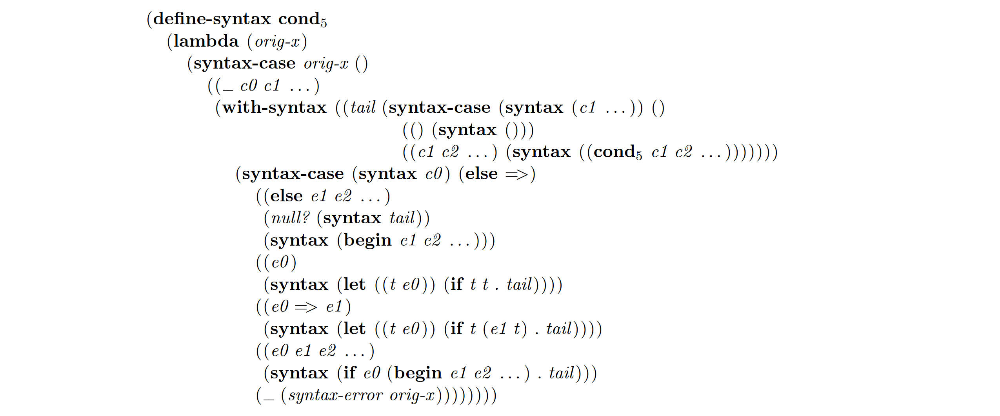如果省略显式的错误子句， (cond (x ) (y . z )) 将导致错误系统报告如下错误：
但是，就像在 cond 的前两个版本中一样， (cond (x ) (y . z )) 中的语法错误仍然会被报告为 (cond (y . z )) 中的错误。下面的版本结合前一个版本和早期版本的技术，以获得正确的结果：
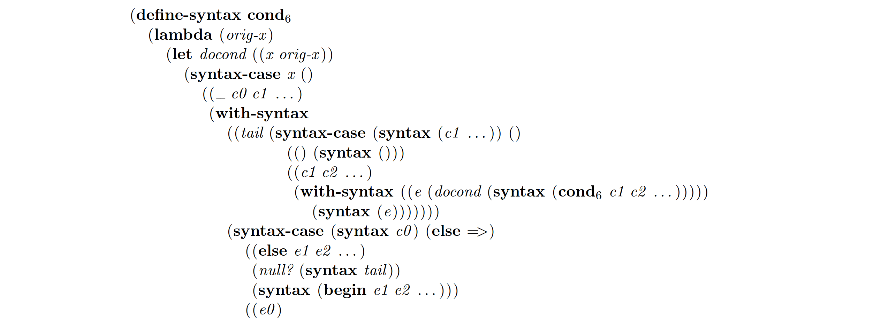下面 cond 的最终定义展开为一对相互递归的本地宏，它们执行展开。尽管它可以工作，甚至可以根据原始 cond 表达式报告错误，但它并不像以前的定义那样简单。此外，它的效率可能比以前的版本要低得多，因为每次程序中出现 cond 表达式时，都需要构造两个新的宏转换器并求值。不过，它确实演示如何将局部宏定义插入宏的输出中，以执行输入的额外复杂处理。
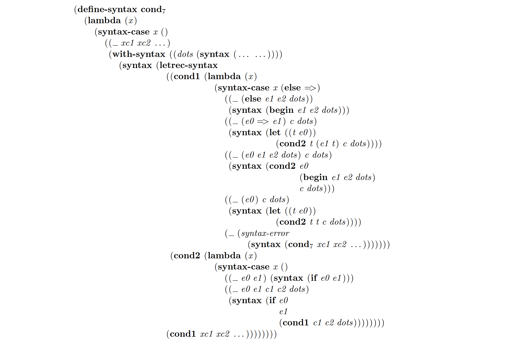( . . . . . . ) “escape” 用于在生成的宏中引入省略号。本节后面展示的 be-like-begin 宏定义提供此特性的更简单演示。
本地宏可以使用 let-syntax 以现有的语法形式或同名的过程来编写，尽管这样做有点棘手，而且通常不是一个好主意。下面显示了如何将给定表达式中的 if 表达式限制为要求“ else”（替代）部分：
上面的表达式的计算结果是2。但是，如果函数体是 (if 1 2) ，则会导致语法错误。
尽管上面的定义看起来很简单，但是在很多方面编写这个宏都很容易出错。首先，如果用 letrec-syntax 代替 let-syntax ，它就不能工作。在这种情况下，插入到本地宏输出中的标识符 if将引用本地的 if ，而不是顶级的 if ，展开将无限循环。接下来，如果定义如下所示:
扩张将再次无限循环。原因是出现在模式开头的标识符 if 被视为模式变量，即使它在关键字 if 的定义中。因此，它被绑定到来自输入表达式的对应标识符 if ，后者表示 if 的本地绑定。最后，将 if 放在文本列表中，试图修补后的版本也不起作用：
这将导致 syntax-case 比较模式中位于 let-syntax 表达式外部的文字 if 与输入表达式中 let-syntax 内部的 if 句法。因为它们引用的不是同一个绑定，所以它们不是 free-identifier=? 。结果是一个语法错误。
使用 _ 代替宏关键字有助于宏编写者避免上述匹配错误标识符或意外插入错误标识符的情况。如果必须根据宏关键字的现有绑定定义局部宏，但必须递归地定义局部宏，该怎么办？这可以通过使用类似于上述 let 和 cond 示例中的内部递归来完成。但也可以通过观察上面第二个 if 例子的问题来实现。以下是 if 的局部定义，它是一种更一般的形式，允许0个或多个测试/结果对，后面跟着一个可选对：

这里使用模式变量 p 从带有 if 本地绑定的输入中获取标识符 if ，以便在递归步骤中使用它。因此，当我们在输出中引用 if 时，它是顶级的 if ，但当我们引用 p 时，它是局部的 if 。
虽然这样做是可行的，但最好的解决方案是将本地宏命名为与顶级宏不同的名称，并使用 letrec-syntax 来支持递归。
经修订4 的计划报告的宏附录提供 syntax-rules 形式，是 syntax-case 的受限制变体。下面是如何用 syntax-case 来定义它：
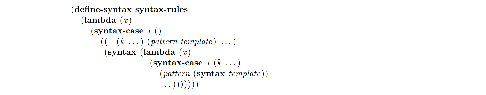syntax-rules 与 syntax-case 有三个不同之处。首先， syntax-rules 本身必须求值为一个转换器(过程)，因此它展开为一个 lambda 表达式。第二， syntax-rules 不支持挡泥板。第三， syntax-rules 子句的输出部分总是一个 syntax 模板，而不是一个任意的表达式，所以它扩展成 syntax 形式。上面的许多宏都可以使用 syntax-rules 编写，但前提是它们可以使用简单的输入模式/输出模板子句编写。 or 的这个定义是一个很好的例子:
实际上，要完全正确，我们必须忽略经修订4 的报告所指定的每个模式的第一位置，出于与前面所述的惯例相同的原因，在与宏调用匹配的模式的第一位置使用 _ 的原因相同。在下一个定义中，我们将插入一组虚拟模式变量：
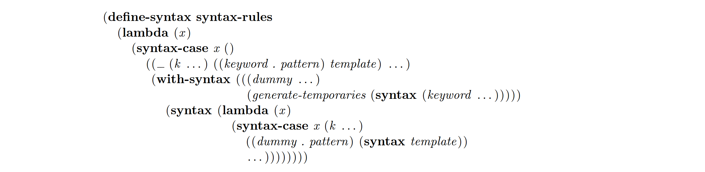Scheme的许多版本都提供 extend-syntax [5, 3] 的一个版本，这是本文中描述的系统的先驱之一。如果我们愿意用 syntax 代替 quote 来标记挡边块和“with”子句，它也可以用 syntax-case 来定义，这些子句将被模板展开器展开。下面的第一个版本显示不带 with 形式的 extend-syntax ，第二个版本允许 with 形式（但仅在输出模板的开头）。
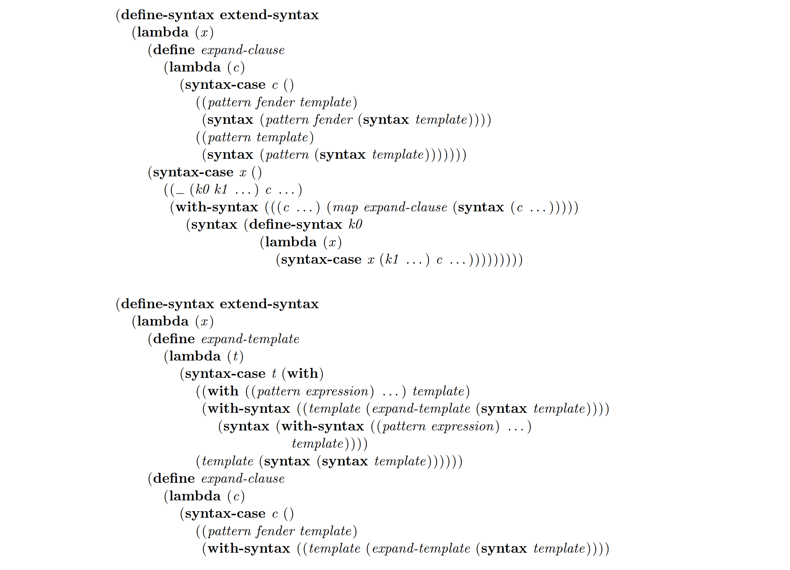 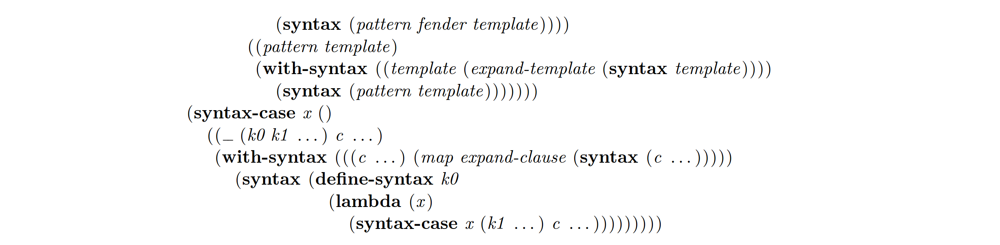使用后一个版本的 extend-syntax ， letrec 可以定义如下：
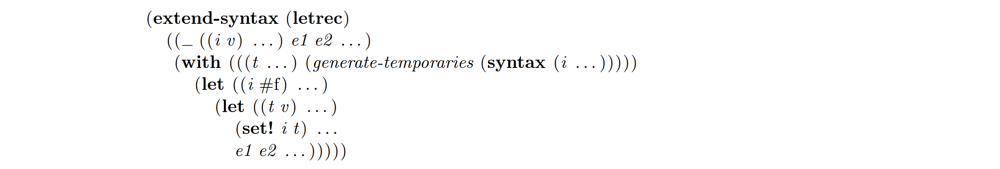前面给出的许多宏定义如果使用 syntax-rules 会更短，如果使用 extend-syntax 仍然会更短。用哪一种其实是口味问题。
接下来的几个例子涉及到在宏的输出中插入隐式标识符。其中第一个定义一个循环宏，该宏将变量 exit 隐式绑定到循环体内的延续：
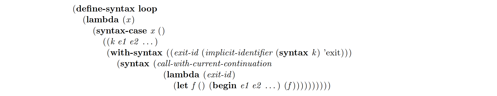使用这个定义，表达式 (loop 1) 可以无限循环，但是：

在第三次迭代时终止。另外：
终止并返回0，但是：
不终止。
为了在循环中创建一个捕获 exit 引用的绑定，使用宏的关键字作为模板创建一个隐式标识符。隐式标识符是与模板标识符在同一时间和同一位置引入的标识符，在本例中是宏调用中的关键字。这就好像隐式标识符是原始宏调用的一部分，是从输入中提取的，而不是由 implicit-identifier 合成的。
为 exit 引入的绑定也可以是一个宏绑定：
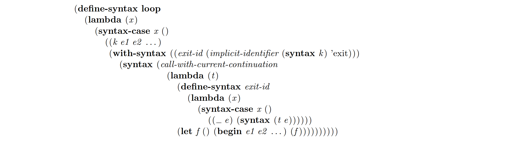上面给出的所有例子对 loop 的定义都是相同的，事实上，生成的代码几乎是相同的。
隐式标识符的另一个常见用途是在结构设施的定义中。下面定义 define-structure 是对 The Scheme Programming Language [3]中的定义的改编。这个系统将结构表示为长度为 n + 1 的向量，其中 n 是字段的数量，第一个元素是结构的名称，其余元素包含字段的值。结构定义展开为一个 begin，其中包含构造函数的一系列过程定义、结构“类型”谓词，以及每个字段的访问和赋值过程。
这些过程的名称是根据结构名和字段名构造的隐式标识符。大部分工作是在本地辅助过程 construct-name 中完成的。这个过程接受一个模板标识符、一个标识符列表和用于形成隐式标识符名称的字符串。
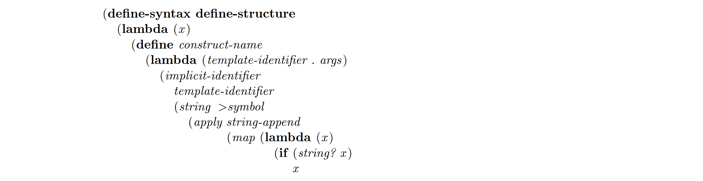 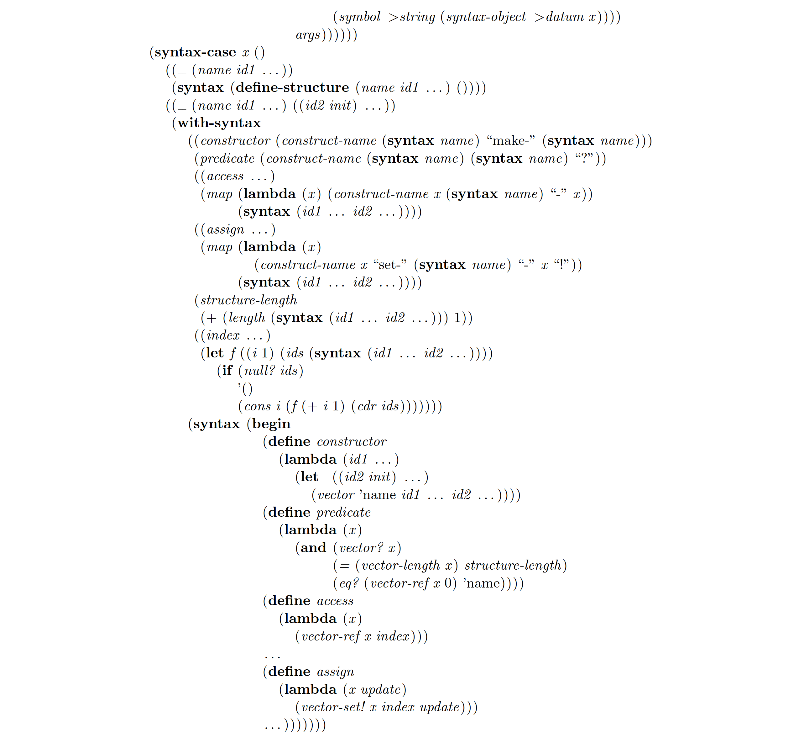注意，在每个对 construct-name 的调用中都选择模板标识符。对于构造函数和谓词标识符，使用结构名称，对于访问和赋值过程标识符，使用相应的字段名称。这些是最符合逻辑的选择，尽管除了递增构建的 define-structure 宏调用之外，没有什么区别。
生成的任何过程定义都可以很容易地替换为宏定义。例如，要将访问器定义为宏，只需要替换：
和:
使用任意一个版本， define-structure 形式都可以出现在 define 或 define-syntax 形式出现的任何地方，包括在 lambda 或类似主体前面的一系列定义中。
下面的定义定义 quasiquote ；它比必要的更复杂，因为它试图将减缩量最小化。虽然本例中没有引入任何新概念，但它是遍历整个输入表达式(而不仅仅是其顶级结构)的宏的一个很好的例子。可以定义一个更简单的版本，用 cons 、 append 和 list->vector 调用的语法替换 gen-cons 、 gen-append 和 gen-vector 调用。
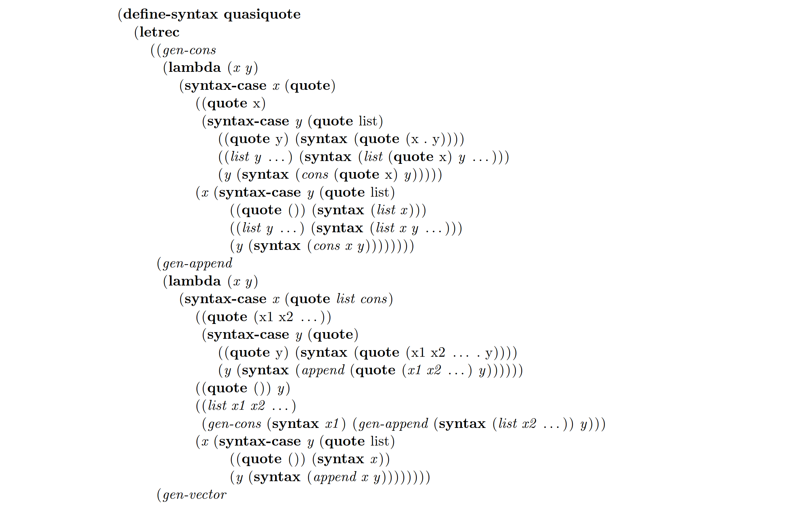 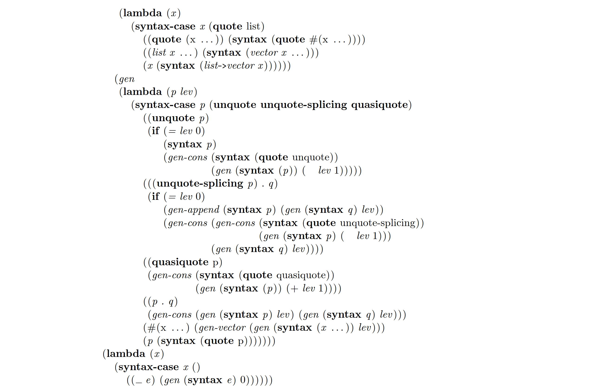与前面定义的 unless 转换器插入的 not 引用一样，插入的 cons 、 list 和其他原语名称的引用解析为顶级绑定，即使这些名称的其他绑定在 quasiquote 表达式的作用域中是显而易见的：
本节的最后一个示例展示一个生成另一个宏的宏，如何使用“转义序列”在生成的宏中包含省略号( . . . . . . )：
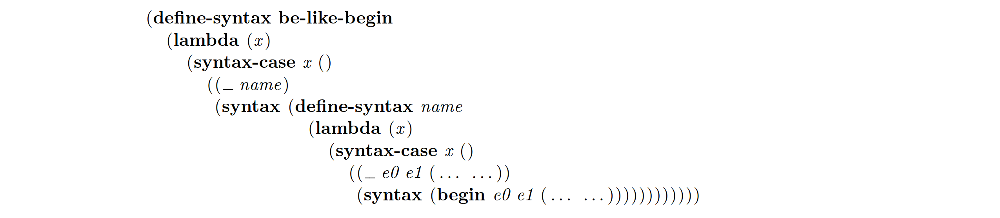在此之后， (be-like-begin sequence) 允许 sequence 与 begin 互换使用。
如果生成的宏中有许多省略号，最好将局部模式变量绑定到 ( . . . . . . ) 使用这个变量来代替 ( . . . . . . ) 的定义：
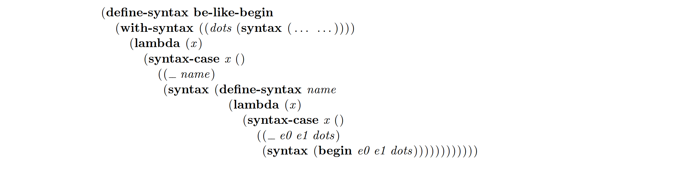宏观系统的实现非常简单。在本节中，将简要描述我们的实现是如何工作的。其他的策略也是可能的。
实现基本宏展开算法是一个称为 expander 的过程，在编译从键盘输入或从源文件加载的每个表达式之前调用这个过程。扩展器遍历输入表达式，展开遇到的任何宏，并处理 lambda 、 if 和 quote 等核心形式。扩展器维护词法编译时环境，其中包含关于词法可见标识符的信息：宏关键字、词法变量名和模式变量名。当扩展器进入 lambda 、 syntax-case 或 letrec-syntax 等词法绑定构造的作用域时，编译时环境被有关新绑定的信息所扩充。在离开范围时，将删除该信息。对于宏关键字，词法编译时环境保存相关的转换。对于模式变量名，它保存嵌套深度，即模式变量后面嵌套的省略号的层次数。对于词法变量名，它只记录它们的存在。
由于标识符绑定可能遮蔽封闭的标识符绑定，所以在展开期间只有最近遇到的任何类型的绑定是相关的。还维护顶级编译时环境，以保存从顶级宏关键字到相关转换器的绑定。只有在标识符没有词法绑定的情况下，顶级编译时环境中的标识符绑定在给定点才相关。短语“编译时环境”指的是词法和顶层环境的组合；在编译时环境中查找的标识符首先在词法环境中查找，如果那里没有绑定，则在顶级环境中查找。
在标识符 x 的词法绑定范围内，扩展器将所有出现的x替换为一个新的标识符。这个新的标识符包含标识符的原始名称、唯一生成的名称和与 x 相同的一组标记(如下所述)。如果标识符最终被用作符号数据，也就是说，如果它最终出现在 quote 表达式中，则保留原来的名称。新生成的名称用于在编译时环境中查找标识符的含义。因此，词法编译时环境将生成的名称映射到绑定信息。
为了提高效率，这种替换实际上是渐进地完成的，而不是一次性完成的，方法是创建一个语法对象，用一个环境将旧标识符映射到相应的新标识符来封装最外层的表单。然后，当扩展器和宏转换器对表单进行解构和遍历(使用 syntax-case) 时，将封装“下推”到子表单中，并执行暂未执行的替换。
对于词法( lambda 限定)变量，生成的名称将成为生成的 lambda 表达式的正式参数名称。对于 syntax-case 模式中的模式变量，在挡泥板和输出表达式中建立每个生成名称的 lambda 绑定；这些名称在运行时绑定到输入的相应部分。对于后跟省略号的模式变量，生成的名称被绑定到相应表单的列表；对于两个层次的省略号，一列一列的对应形式；等等。对于 let-syntax 和 letrec-syntax 表单，生成的名称不会在运行时绑定，而只是在编译时环境中用作绑定的句柄。
当扩展程序遇到标识符引用时，扩展程序的操作取决于引用的上下文和标识符的可见编译时绑定。
如果标识符出现在可能是宏调用的表单的关键字位置，并且在编译时环境中发现它是宏关键字，则将按下面所述调用关联的转换器。
如果扩展器遇到的标识符是一个明显的变量引用，并且将其绑定为词法变量( (lambda 绑定变量)，则将其转换为对相应生成的名称的引用。如果它没有绑定到任何地方，则假定它是对顶级绑定的引用，并因此展开为其原始名称。对任何其他类型标识符(宏关键字或模式变量)的明显变量引用都是无效引用，扩展程序会对此进行标记。
如果标识符出现在 syntax 表单中，并且它被绑定为编译时环境中的模式变量，则扩展器将使用生成的名称和嵌套级别来生成代码，将相应的子表单插入到输出中。在 syntax 形式中出现的任何其他标识符都将不加更改地插入到输出中。
如果标识符出现在 quote 形式中，它将被剥离为原始名称。
宏调用的处理方法如下。首先，创造一个新的“标记”。每个标记都与其他标记相区别，但除此之外，如何表示标记并不重要。我们目前用整数表示标记。此标记附加到宏输入中的每个标识符，并将产生的表达式传递给转换器。转换器输出中的标识符也有类似的标记，只是已经附加了该标记的标识符将被除去该标记。这样，标记只“粘”在转换器引入的标识符上；它不坚持转换从输入复制到输出的标识符。正如上面描述的用新标识符替换旧标识符一样，为了提高效率，这种标记是递增的；将记录要应用的标记以及要在每个语法对象中执行的替换。
这些标记用于禁止替换宏引入的词法标识符，这些标识符不应该被调用上下文中的绑定捕获，也不应该(如果被宏的输出绑定)捕获调用输入中的引用。如果词法绑定构造范围内某个标识符出现的标记与绑定标识符上的标记不相同，则该出现不会发生，即使这些标识符在其他方面是等价的。
例如，考虑扩展：
使用 or 的双子表达式版本：
上面的表达式应该求值为变量 t 的顶级值。随着扩展的展开，观察替换和标记如何防止源表达式中的 if 绑定干扰宏对 if 的使用，以及宏对 t 的绑定干扰源表达式对 t 的引用。
为简单起见，假设 let 直接由扩展器处理；稍微有点乏味，可以先将它展开成相应的 lambda 应用程序。还假设标识符替换和标记是立即应用的，而不是增量应用的。
为了便于讨论，标识符显示为如下形式的有序三元组：
原始输入是这样的：
在第一步中，由于 let 在顶层环境中除了最初的绑定之外没有其他绑定，外部 let 表达式的绑定变量被替换为生成的名称 g0001 ，并且在 let 表达式范围内出现的标识符被替换为一个新的标识符，该标识符同时包含生成的和原始的名称：
这种对 g0001 的绑定也被记录在词法编译时环境中。接下来，调用 or2 的转换器，其输入中的标识符被标记为标志 m1 :
or2 的变压器产生：
接下来，在 or2 转换器的输出中，未标记为 m1 的标识符被如此标记，而 m1 标记从其他标记中删除(因为相同的标记被取消)。
当在编译时环境中确定标识符的绑定时，只有当前名称是相关的，所以即使标记 m1 附加到标识符 let ，它仍然解析为 let 的顶级定义。因此，绑定的标识符被替换为生成的名称，并且在 let 表达式范围内出现的标识符(具有相同的当前名称和标记)被替换为新的标识符：
词法编译时环境也记录对 g0002 的绑定，该环境还保存着对 g0001 的绑定记录。
由于 g0001 被记录为编译时环境中的词法绑定变量， (if, g0001, {}) 的出现扩展为对 g0001 的引用。因此，到目前为止，输出表达式包含以下内容：
最后一行还没有展开。由于标识符 (if, if, {m1 }) 的当前名称是 if ，所以最后一行被识别为 if 表达式：
只有这个 if 表达式中的三个变量引用需要展开。其中第一个和第二个的当前名称 g0002 被记录为编译时环境中的词法变量，因此它们都简单地展开为 g0002 。第三个变量的当前名称是 t ，它在词法编译时环境中没有绑定；因此，它展开为对 t 的顶级引用。扩展器的最终输出是：
在实际实现中，负责“推下”替换和标记的是 syntax-case 表达式。由于 syntax-case 将输入与模式匹配，因此必须进行解构的任何语法对象只在执行匹配所需时进行解构，替换和标记将转移到解构形式的子表达式中。如果匹配成功，结果值将绑定到挡泥板和输出表达式中的模式变量(实际上是对应生成的名称)。在这些模式变量范围内的 syntax 表达式的子表单将根据需要重新构建，以插入这些值。所有附加到 syntax 输出片段上的替换和标记都被保留，这样当它们随后被插入到宏的输出时，这些片段中的标识符引用它们第一次出现时可见的绑定。扩展器从 quote 形式(相当于使用 syntax-object >datum )中删除所有此类信息，因为引用的符号被用作普通的符号数据。
当且仅当它们具有相同的当前名称(这意味着它们具有相同的原始名称)和相同的标记时，两个标识符是 bound-identifier=? 。当且仅当它们当前名称相同时，两个标识符是 free-identifier=? 。这反映编译时环境查找和标识符替换规则：只有当前名称与确定标识符的绑定相关，而当前名称和标记必须一致同意在词法绑定构造的范围内替换标识符。
bound-identifier=? 的两个标识符可能不是 eqv? ，因为其他信息(包括源注释)可能出现在标识符结构中。因此，在标识符上很少使用 eqv? 。
implicit-identifier 的实现很简单，尽管它确实对实现施加了约束，否则就不必要了。具体地说，必须将与标识符出现时可见的绑定形式所需的所有标识符替换记录在标识符中，包括那些由于当前名称或标记的不同而不会影响标识符的替换。隐式标识符是通过将模板标识符中的替换和标记复制到新标识符中而形成的。新标识符的原始名称由 implicit-identifier 的第二个参数指定，而当前名称由模板标识符记录的替换和标记确定。
谨此报告献给我的好朋友兼同事鲍勃·希布。1992年4月30日，他和他11岁的女儿伊娃在离家不远的一场悲惨的车祸中丧生。Bob和我在这里描述的宏观系统上工作了好几年，许多最重要的概念和算法都是由Bob开发的，他把它作为他的论文项目。
我要感谢Carl Bruggeman对本报告草稿的详细和深思熟虑的评论，也感谢他对“Scheme TeXer”的使用，本报告中包含的示例就是用它来格式化的。我要感谢David Eby, George施普林格，Dan Friedman和David Moon的帮助。
[1] William Clinger and Jonathan Rees. Macros that work. In Conference Record of the Eighteenth Annual ACM Symposium on Principles of Programming Languages, pages 155–162, January 1991.
[2] William Clinger, Jonathan A. Rees, et al. The revised4 report on the algorithmic language Scheme. LISP Pointers, 4(3), 1991.
[3] R. Kent Dybvig. The Scheme Programming Language. Prentice-Hall, 1987.
[4] Robert Hieb, R. Kent Dybvig, and Carl Bruggeman. Syntactic abstraction in scheme. Technical Report 355, Indiana Computer Science Department, June 1992.
[5] Eugene Kohlbecker. Syntactic Extensions in the Programming Language Lisp. PhD thesis, Indiana University, Bloomington, August 1986.
[6] Eugene Kohlbecker, Daniel P. Friedman, Matthias Felleisen, and Bruce Duba. Hygienic macro expansion. In Proceedings of the 1986 ACM Conference on Lisp and Functional Programming, pages 151–161, 1986.